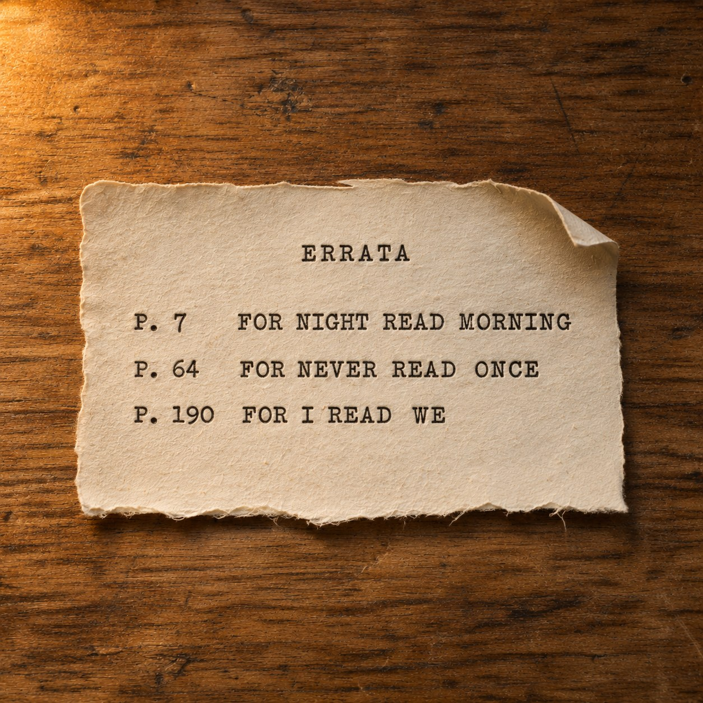
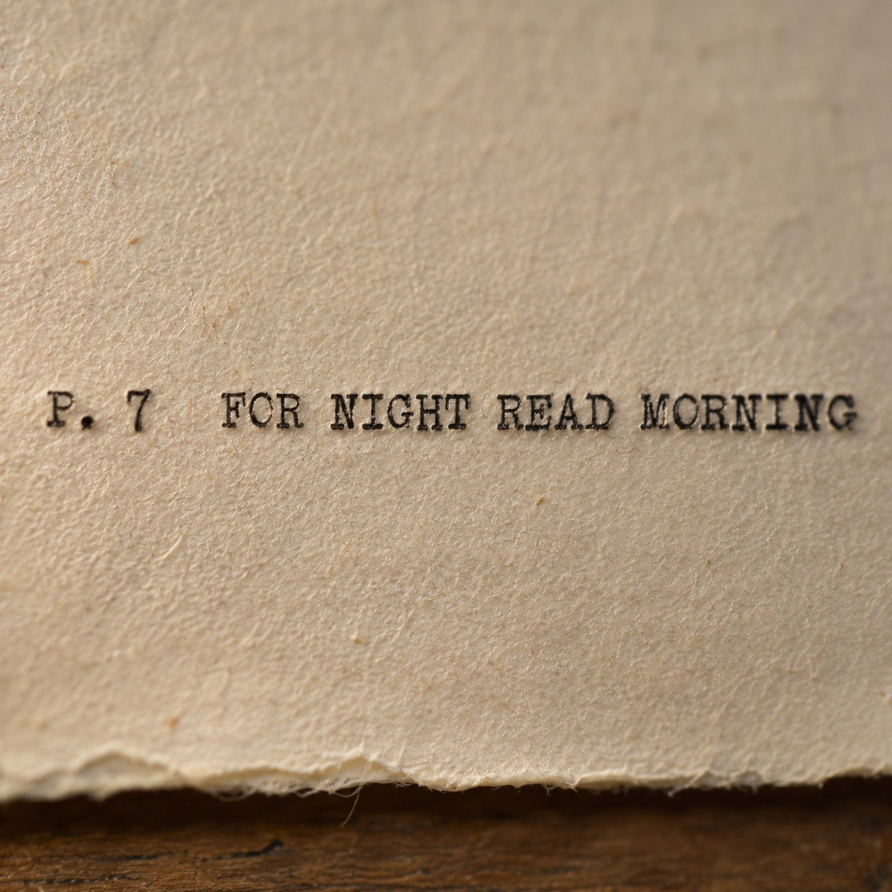

For Night Read Morning


An errata slip is the humblest thing a book can carry. A small printed sheet, laid loose inside the cover, listing what went wrong. Page 7, for NIGHT read MORNING. Page 64, for NEVER read ONCE. Page 190, for I read WE.
This slip has no book. There was never a page 7 for it to fix. And still it is hard to read the three lines and believe that. A correction speaks with total confidence about the text it points to. It knows the page and the very word. It cannot help assuming the book is there.
So the book begins to exist, backwards. It runs to at least a hundred and ninety pages. Something in it happened in the morning, though it was first written as night. Something happened once that was first told as never.
Marcel Broodthaers took the unsold copies of his own book of poems and set them in plaster, so they could be seen and never read. Here it goes the other way. There is nothing to see, and still there is something to read, if only the mistakes.
We know a great deal of the past like this. Not the thing itself, but the record of an error about it. A correction carries the original inside it, word for word, as the thing it was wrong about. Often that is all that survives.
I keep coming back to the last line. For I read WE. Whoever wrote the book thought, for nearly two hundred pages, that they were alone in it.